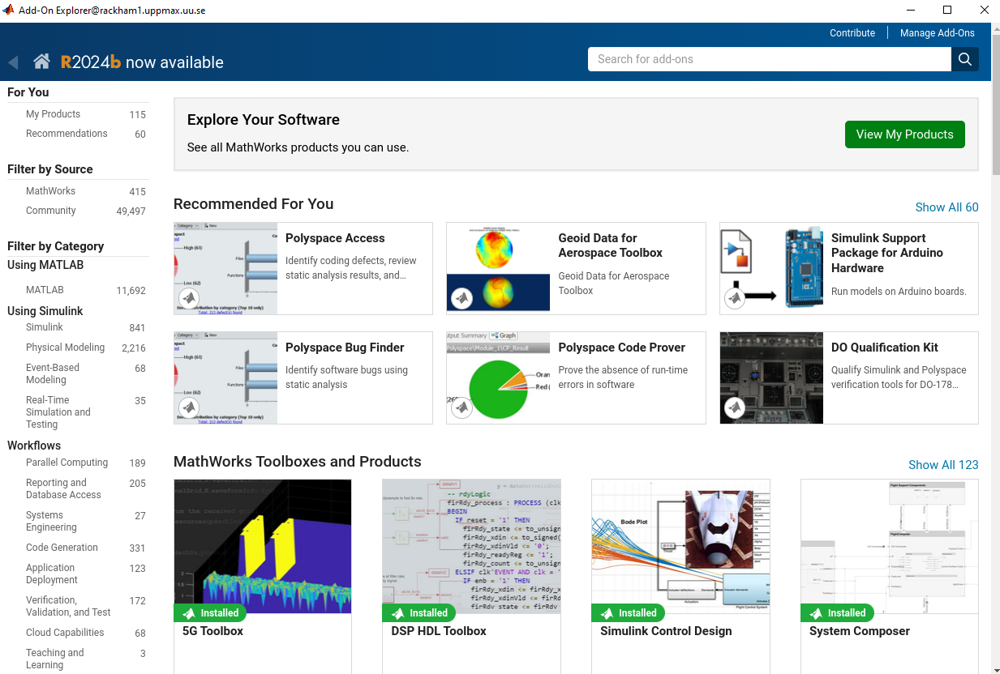
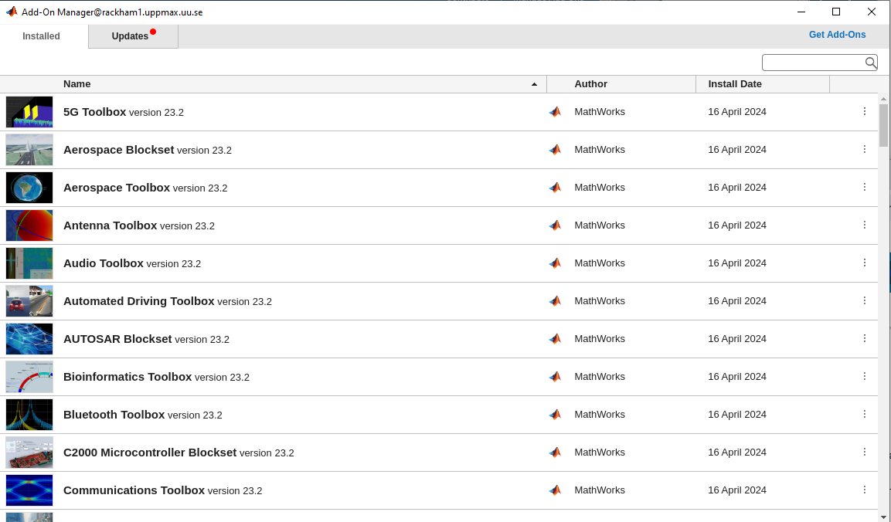
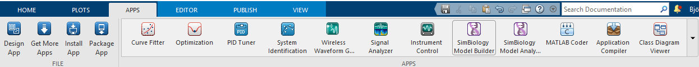

Add-Ons
MATLAB Add-Ons
- Add-ons extend the capabilities of MATLAB® by providing additional functionality for specific tasks and applications, such as:
connecting to hardware devices
additional algorithms
interactive apps
- Available from:
MathWorks®
the global MATLAB user community
- Encompass a wide variety of resources
products
apps
toolboxes
support packages
Learners should be able to
navigate to toolboxes and Add-Ons
view Add-Ons and toolboxes
install and use Add-Ons
Before going into installing Add-Ons let’s have a background to the MATLAB environments and ecosystem!
MATLAB Add-Ons manager
In the GUI, the Add-Ons manager can be selected from the menu at the top. The drop-down menu options allow users to:
Browse a library of Add-Ons to download. Note that some Add-Ons require a separate license.
 Manage Add-Ons already downloaded.

Package user-generated code as a Toolbox or App
Get hardware-related support packages
Here we will only focus on the first two options.
Note
Note that very many packages are already included in the Academic installation and license
Some toolboxes
- Matlab products
Parallel Computing Toolbox
MATLAB Parallel Server
Deep Learning Toolbox
Statistics and Machine Learning Toolbox
- Simulink
Stateflow
SimEvents
Simscape
Some toolboxes provides GUI for their tools Apps
- Matlab products
Deep Network Designer - Design and visualize deep learning networks Deep Network Designer
Curve Fitter - Fit curves and surfaces to data
Deep Learning Toolbox
Statistics and Machine Learning Toolbox
- Simulink
Stateflow
SimEvents
Simscape

We won’t cover the usage of the toolboxes here!
Install Add-Ons
Search in add-ons explorer and install.
Ends up in local folder and is in the part so it should be reached wherever you are in the file tree.
~/MATLAB Add-OnsIt’s in the path so it should be possible to run directly if you don’t need to run a installation file.
For more information about a specific support package install location, see the documentation for the package.
Warning
To be able to install you need to use the email for a personal mathworks account.
See also
You can install some Add-Ons manually using an installation file. This is useful in several situations:
The add-on is not available for installation through the Add-On Explorer, for example, if you create a custom add-on yourself or receive one from someone else.
You downloaded the add-on from the Add-On Explorer without installing it.
You downloaded the add-on from the File Exchange at MATLAB Central™.
Demo
Search for
kalmanfClick “Learning the Kalman Filter”
Look at the documentation
Test if the command works today:
>> kalmanf
Unrecognized function or variable 'kalmanf'.
OK, it is not there
Click “Add”, and “Download and Add to path”
Type email address connected to your MathWorks account
Installation starts
It will end up in:
$ tree MATLAB\ Add-Ons/
MATLAB\ Add-Ons/
└── Collections
| └── Efficient\ GRIB1\ data\ reader
| ├── core.28328
| ├── license.txt
| ├── readGRIB1.c
| ├── readGRIB1.mexa64
| └── resources
| ├── addons_core.xml
| ├── matlab_path_entries.xml
| ├── metadata.xml
| ├── previewImage.png
| ├── readGRIB1.zip
| └── screenshot.png
└── Functions
└── Learning\ the\ Kalman\ Filter
├── kalmanf.m
└── resources
├── addons_core.xml
├── kalmanf.zip
├── matlab_path_entries.xml
├── metadata.xml
├── previewImage.png
└── screenshot.png
Evidently it is a
function. Note that I already have something classified ascollectionsNow test:
>> kalmanf()
'kalmanf' requires Learning the Kalman Filter version 1.0.0.0 to be enabled.
OK. It is installed but may need some other things. Just an example!!
Exercises
1. Find the kalmanf and install it and run a test command.
2. (Optional) Browse the add-ons and get inspired for your own work!
Keypoints
Many Add-Ons, like toolboxes and packages are available at the Clusters
You can view Add-Ons and toolboxes
It is all more or less graphical
To install Add-Ons
Search in Add-Ons explorer and install.
Ends up in local folder and is in the path so it should be reached wherever you are in the file tree.